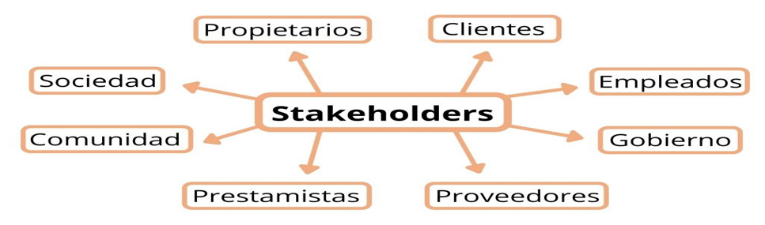

Los stakeholders son personas, grupos u organizaciones que tienen interés o se ven afectados por las acciones, decisiones y resultados de una empresa u organización. Un stakeholder, también conocido como parte interesada, es cualquier individuo o entidad que puede influir o ser influido por las actividades de una empresa. Su interés puede ser económico, social, laboral, político o ambiental, y su relación con la organización puede ser directa o indirecta

Los stakeholders se pueden clasificar según su relación con la empresa, su influencia y su importancia estratégica, distinguiéndose entre internos y externos, primarios y secundarios, y según atributos como poder, legitimidad y urgencia.
Los stakeholders internos son aquellos individuos o grupos que tienen una relación directa con la organización, ya sea a través de un contrato laboral, una participación accionaria o una función directiva. Ejemplos de stakeholders internos incluyen empleados, gerentes y propietarios. Su participación directa en las operaciones de la empresa y su influencia en la toma de decisiones son fundamentales para el éxito del negocio.
Los stakeholders externos son personas, grupos u organizaciones que no forman parte directa de la estructura corporativa pero que pueden afectar o verse afectados por las actividades de la empresa. Estos pueden incluir clientes, proveedores, gobiernos, competidores, comunidad cercana a la empresa, entre otros. Su influencia puede ser transaccional, regulatoria, social o incluso simbólica.
Stakeholders primarios: esenciales para el funcionamiento de la empresa, con vínculos directos y muchas veces contractuales, como empleados, clientes, proveedores e inversionistas.
influyen o se ven influidos por la empresa de manera indirecta, como medios de comunicación, grupos de opinión o ciertas organizaciones del entorno.
Los stakeholders terciarios son aquellos grupos o individuos que no tienen un interés directo en la empresa, pero que pueden verse afectados indirectamente por sus decisiones.
Los requerimientos funcionales son descripciones específicas de las fuciones y comportamientos que un sistema de software debe cumplir para satisfacer las necesidades de los usuarios y los objetivos del proyecto.
Los requerimientos no funcionales no se centran en las funciones específicas que realiza un sistema, sino en cómo se deben ejecutar esas funciones y en las características globales que afectan la experiencia del usuario y la calidad del software.
| RFN | ¿Que Es? | Ejemplo |
|---|---|---|
| Rendimiento | El requerimiento no funcional de rendimiento define cómo de rápido y eficiente debe operar un sistema, incluyendo tiempos de respuesta, capacidad de procesamiento y manejo de carga simultánea. | Un ejemplo de un requerimiento no funcional en rendimiento podría ser: "El sistema debe soportar 10,000 usuarios concurrentes con una latencia inferior a 300 ms". Este requerimiento establece un límite de usuarios que el sistema puede manejar simultáneamente y la latencia máxima que debe soportar para mantener una experiencia de usuario óptima. |
| Seguridad | Un requerimiento no funcional de seguridad define cómo un sistema debe proteger la información y los recursos frente a accesos no autorizados, garantizando confidencialidad, integridad y disponibilidad. | Un ejemplo de un requerimiento no funcional en seguridad podría ser la necesidad de que un sistema de gestión de acceso a recursos tenga un proceso de autenticación seguro que verifique la identidad de los usuarios antes de permitirles acceder a los datos o recursos. Este requerimiento no funcional asegura que solo usuarios autorizados puedan acceder a ciertos datos y protege la confidencialidad y la integridad de la información. |
| Usabilidad | El requerimiento no funcional de usabilidad se refiere a las características que deben cumplir un sistema para ser fácil de usar y accesible. Esto incluye aspectos como la navegación intuitiva, la facilidad de interacción con los usuarios y la accesibilidad desde dispositivos móviles. Un sistema debe permitir a los usuarios realizar tareas con un bajo esfuerzo y sin complicaciones, lo que mejora la experiencia del usuario y la satisfacción general con el producto final. | Un ejemplo claro de requerimiento no funcional en usabilidad es: "La aplicación deberá permitir que un usuario nuevo complete el proceso de registro en menos de tres minutos y utilizando como máximo dos pantallas consecutivas, asegurando que la navegación sea intuitiva y que cualquier función principal pueda encontrarse en máximo tres clics". |
| Disponibilidad | La disponibilidad es un requerimiento no funcional que se refiere a la capacidad del sistema para estar disponible y accesible para los usuarios en el tiempo previsto. Esto implica que el sistema debe estar disponible el 99.9% del tiempo durante el horario laboral, lo que garantiza que los usuarios puedan acceder a sus servicios y aplicaciones sin interrupciones significativas. | la disponibilidad se cuantifica mediante un porcentaje de tiempo operativo, mostrando cómo el requerimiento no funcional guía a los desarrolladores en decisiones de arquitectura y confiabilidad del sistema, asegurando que los servicios estén accesibles para los usuarios según lo esperado. |
| Accesibildad | La accesibilidad es un requerimiento no funcional que se refiere a la facilidad con la que un sistema puede ser utilizado por personas con diferentes capacidades. Esto incluye aspectos como la navegación, la interacción con el sistema, y la accesibilidad de la interfaz para personas con discapacidades. Un sistema accesible debe permitir a todos los usuarios, independientemente de sus habilidades, acceder y utilizar sus funcionalidades de manera efectiva y cómoda | La plataforma web deberá ser completamente accesible para usuarios con discapacidades visuales, auditivas y motoras, permitiendo la navegación y operación únicamente mediante teclado o dispositivos de asistencia, proporcionando textos alternativos descriptivos para imágenes y videos, asegurando contraste de color adecuado, y cumpliendo las pautas de accesibilidad |
| Escalabilidad | La escalabilidad es un requisito no funcional que se refiere a la capacidad de un sistema para manejar un aumento en la cantidad de usuarios o el volumen de datos sin una pérdida significativa de rendimiento. | Un ejemplo de requerimiento no funcional en escalabilidad podría ser: "El sistema debe soportar hasta 10,000 usuarios concurrentes con una latencia inferior a 300 ms." Este requerimiento establece que el sistema debe ser capaz de manejar un gran número de usuarios simultáneamente y mantener una latencia mínima, lo que es crucial para la experiencia del usuario y la eficiencia operativa. |
| mantenibilidad | Los requisitos de mantenibilidad garantizan que el sistema sea fácil de actualizar, depurar y modificar, lo que facilita la adaptabilidad a largo plazo a los cambios. | Los objetivos incluyen la modularidad, la documentación del código y el uso de prácticas de código limpio. Por ejemplo, una arquitectura modular permite que partes del sistema se actualicen de forma independiente, lo que reduce el tiempo y el costo de mantenimiento. |
| portabilidad | Los requisitos de portabilidad se centran en la capacidad del sistema para funcionar en distintos entornos o plataformas, lo que permite flexibilidad en la implementación. | Las métricas incluyen la facilidad de transferencia del sistema a diferentes entornos de SO o hardware. Por ejemplo, una aplicación móvil multiplataforma podría requerir compatibilidad con iOS y Android. |
| Compatibilidad | La compatibilidad es un requerimiento no funcional que se refiere a la capacidad del sistema para funcionar correctamente con otros sistemas, aplicaciones o dispositivos. Esto incluye aspectos como la integración con otras plataformas, la compatibilidad con diferentes sistemas operativos o la capacidad de soportar múltiples dispositivos. | Un ejemplo de un requerimiento no funcional en el contexto de la compatibilidad podría ser: "El sistema debe soportar 10,000 usuarios concurrentes con una latencia inferior a 300 ms". Este requerimiento establece que el sistema debe ser capaz de manejar un gran volumen de usuarios y mantener una latencia mínima, lo que es crucial para la experiencia del usuario y la eficiencia operativa. |
| Confiabilidad | La confiabilidad es la capacidad de un sistema de software para funcionar correctamente sin fallas durante un período de tiempo determinado, siendo un atributo clave de los requerimientos no funcionales. | Un ejemplo de un requerimiento no funcional en confiabilidad podría ser: "El sistema debe estar disponible el 99.9% del tiempo durante el horario laboral". Este requerimiento establece que el sistema debe cumplir con altos estándares de disponibilidad, lo que es crucial para mantener la confianza del usuario y la continuidad del negocio. |
| Restriciones tecnologicas | Las Restricciones tecnológicas son un tipo de requerimiento no funcional que se refiere a las condiciones y limitaciones técnicas que un sistema debe cumplir para operar de manera efectiva. Estas restricciones pueden incluir aspectos como la arquitectura, la infraestructura tecnológica, la interoperabilidad y los componentes técnicos necesarios para el funcionamiento del sistema. | Un ejemplo de requerimiento no funcional en restricciones tecnológicas podría ser: "El sistema debe cargar páginas en menos de 2 segundos para garantizar una experiencia de usuario óptima". Este requerimiento establece un límite de tiempo para el rendimiento del sistema, asegurando que los usuarios no enfrenten interrupciones significativas durante su uso. |